Biological Stats 2: Lab 1
Dr. Gavin Fay
2025-01-22
Lab schedule
1/22: Introduction to R and R Studio, working with data
1/29: Visualizing data
2/05: Probability, linear modeling
2/12: Data wrangling, model summaries
2/19: Simulation, Resampling
2/26: Iteration
3/05: Creating functions, debugging
3/19: Flex: automated reporting & Quarto
4/02: working with Spatial data
Format for lab component
- Description/overview of concepts by instructor
- Live coding. Interactive, follow along yourselves
- Lab exercises to practice material
- Assignment each week is to finish the exercises
- Extra credit: #TidyTuesday
- Community support
“Try stuff and see what happens”
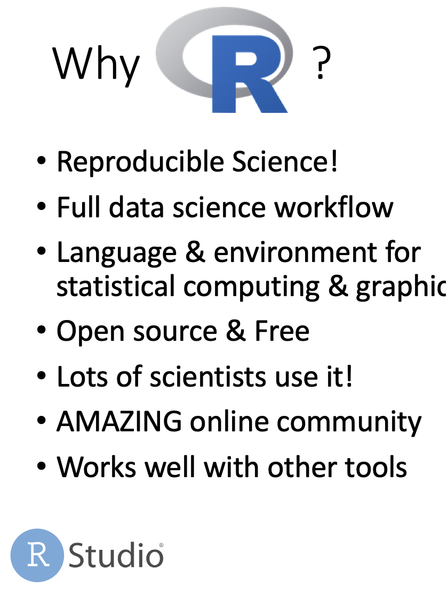
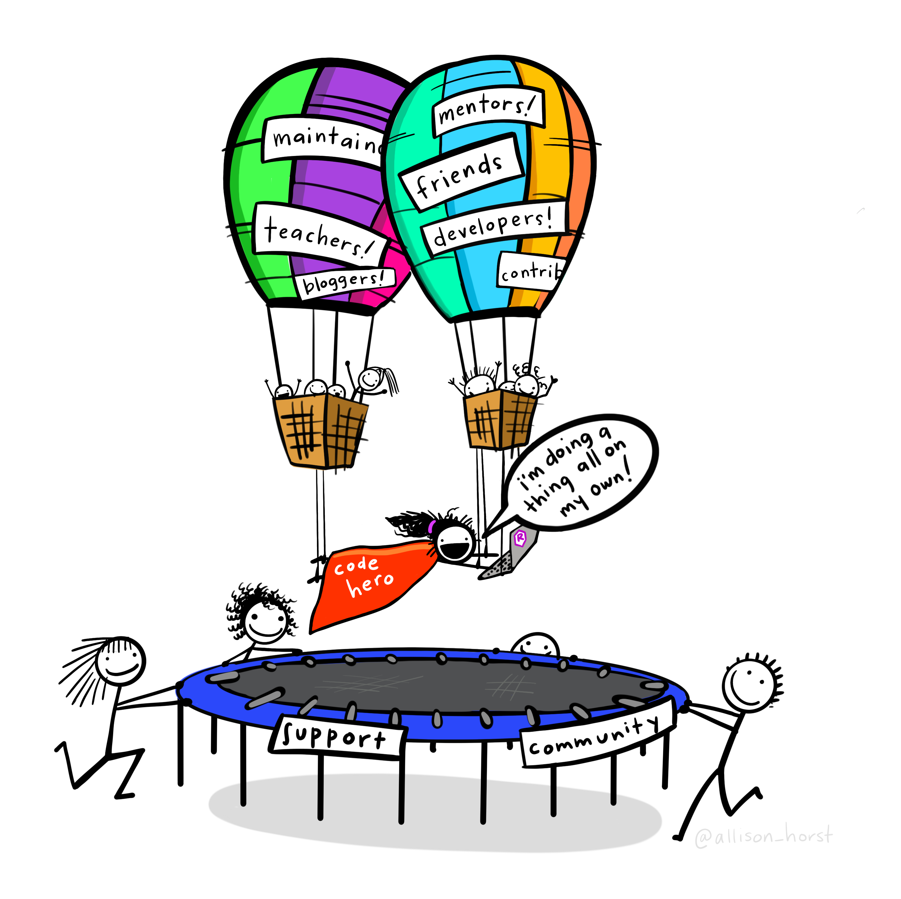
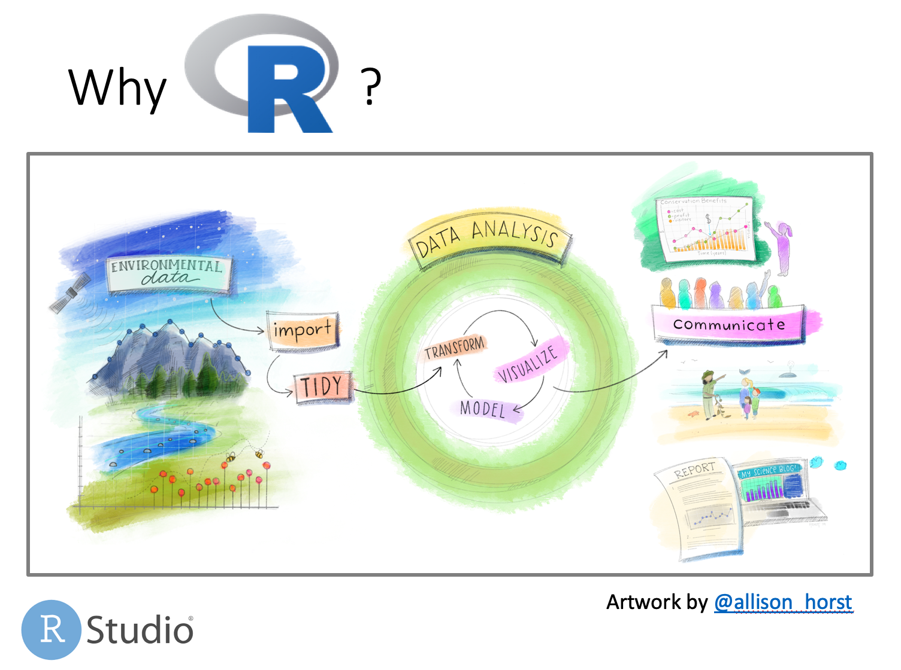
Why R?
Reproducible
- command line interface encourages organization
- scripts allow others (and you!) to reproduce analyses from end-to-end
- integration of analysis with document creation
Extensible
- new methods delivered as developed
- continual expansion through new packages
Open-source
- all code can be examined by the user
Free
- available to large set of users (and therefore developers)
R is not the only solution out there.
The real goal is not to teach R, but concepts that all programming depends on.
Trevor Branch rule:
“Every analysis you do on a dataset will have to be redone 10–15 times before publication. Plan accordingly.”
Recommended reading
R for Data Science, 2017 (Wickham and Grolemund)
https://r4ds.had.co.nz/
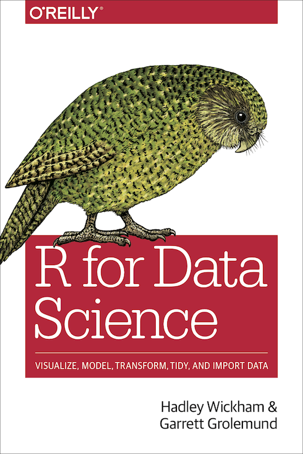
Recommended reading
An introduction to R (Venables et al.)
– http://cran.r-project.org/doc/manuals/R-intro.pdf
R reference card 2.0 (Baggott)
– http://cran.r-project.org/doc/contrib/Baggott-refcard-v2.pdf
– Extremely useful handout: put on wall in view of your desk
Cheatsheets
- https://posit.co/resources/cheatsheets/
There are many (many) R books out there. Good for reference. e.g.
- The R Book, 2007 (Crawley)
- Modern Applied Statistics with S, 20002 (Venables and Ripley)
- Introductory Statistics with R, 2002 (Dalgaard)
Reproducibility checklist
What does it mean for a data analysis to be “reproducible”?
Near-term goals:
- Are the tables and figures reproducible from the code and data?
- Does the code actually do what you think it does?
- In addition to what was done, is it clear why it was done?
Long-term goals:
- Can the code be used for other data?
- Can you extend the code to do other things?
Toolkit for reproducibility
- Scriptability \(\rightarrow\) R
- Literate programming (code, narrative, output in one place) \(\rightarrow\) R Markdown
- Version control \(\rightarrow\) Git / GitHub
R and RStudio
- R is an open-source statistical programming language
- R is also an environment for statistical computing and graphics
- It’s easily extensible with packages
- RStudio is a convenient interface for R called an IDE (integrated development environment), e.g. “I write R code in the RStudio IDE”
- RStudio is not a requirement for programming with R, but it’s very commonly used by R programmers and data scientists
Using R today: RStudio Cloud
An alternative:
- web browser interface https://posit.cloud/content/5243518
R packages
Packages are the fundamental units of reproducible R code. They include reusable R functions, the documentation that describes how to use them, and sample data 1
As of September 2020, there are over 16,000 R packages available on CRAN (the Comprehensive R Archive Network)2
We’re going to work with a small (but important) subset of these!
Tour: R and RStudio
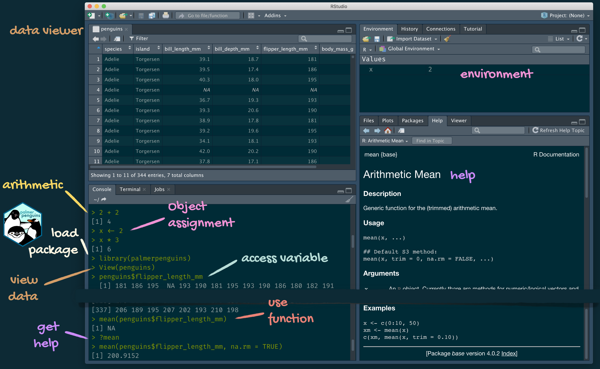
A short list (for now) of R essentials
- Functions are (most often) verbs, followed by what they will be applied to in parentheses:
tidyverse
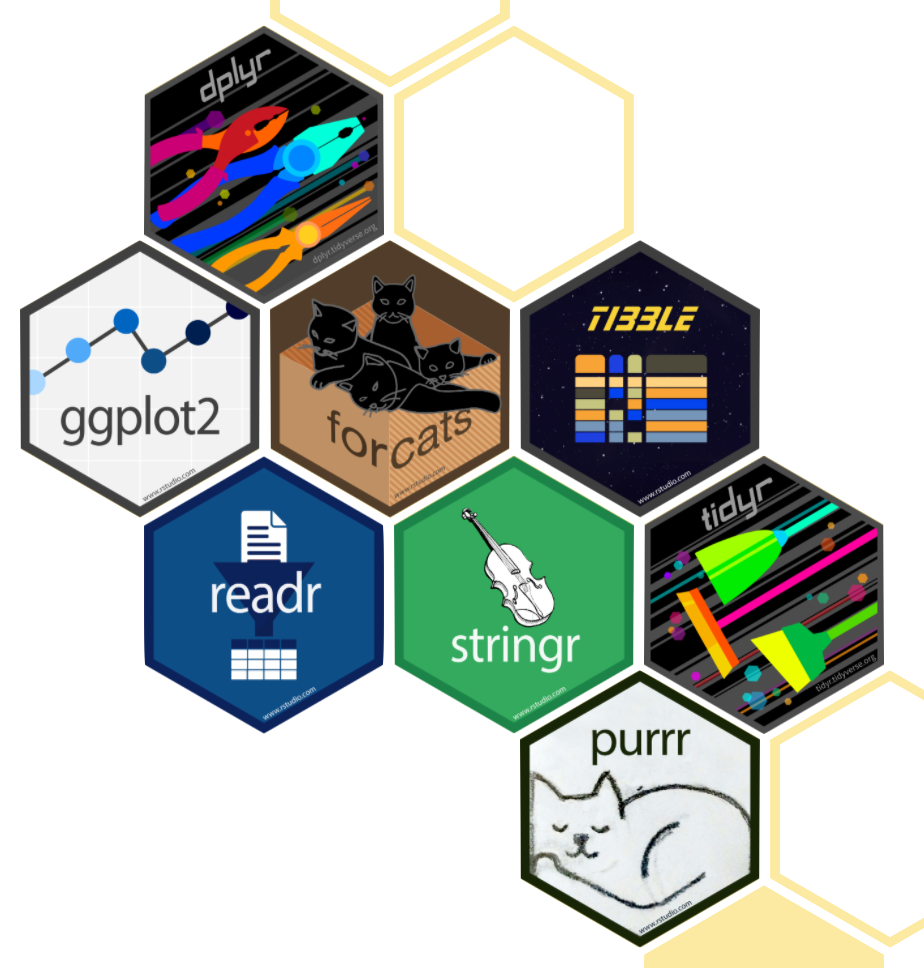
- The tidyverse is an opinionated collection of R packages designed for data science
- All packages share an underlying philosophy and a common grammar
Getting started
Enter instructions at R console command line prompt (>): e.g. type
R acts as a calculator and returns (prints) the result.
Simple commands
The <- means ‘assign’. i.e. ‘assign a value of 3 to the variable x’. <- is preferable to using =
Scripts and RStudio
Typing commands into the console can get tedious.
Scripts are text files containing lines of code.
Scripts provide a complete record of analyses.
Code can be run (executed) from these files repeatedly.
Scripts can be created in a text editor and copied into the R console.
Or…
RStudio integrates scripts, R console, and output in a user-friendly development environment.
To run code in RStudio, select code and type
Ctrl+Enter(Windows)
Command+Enter(Mac)
The code will run in the R console.
rmarkdown
- rmarkdown and the various packages that support it enable R users to write their code and prose in reproducible computational documents
- We will generally refer to R Markdown documents (with
.Rmdextension), e.g. “Do this in your R Markdown document” and rarely discuss loading the rmarkdown package
R Markdown
- Fully reproducible reports – each time you knit the analysis is ran from the beginning
- Simple markdown syntax for text
- Code goes in chunks, defined by three backticks, narrative goes outside of chunks
Tour: R Markdown
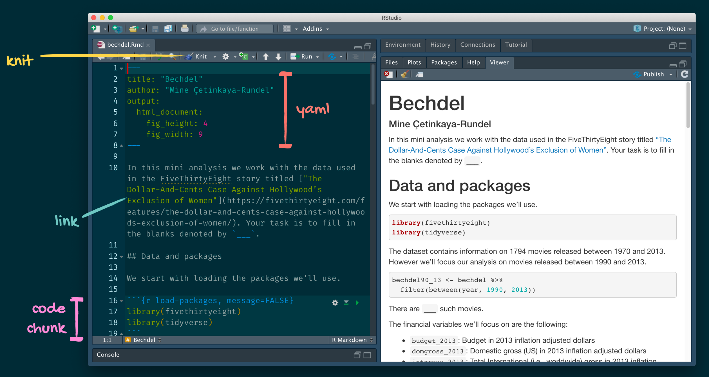
Getting Help in R
R is a programming language, there is a learning curve.
Fortunately, there are lots of resources:
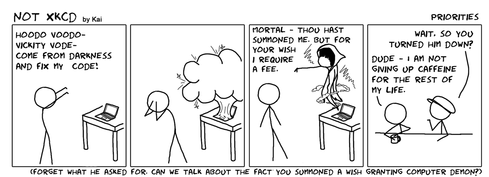
Don’t summon a wish-granting computer demon.
Getting Help in R
R is a programming language, there is a learning curve.
Fortunately, there are lots of resources:
- help files
- online search results
- books
- colleagues
- RStudio Community
The above both get help for the function mean.
Use help.search("function.name") to search across packages.
str(object.name) shows the structure of an object.
R Help files (?mean)
Common format:
- Description (what the function does)
- Usage (how to use it)
- Arguments (what the function needs, options)
- Value (what does the function return)
- See Also (related functions)
- Examples (sample code showing how the function works)
Read function documentation and explore behavior by running examples!
R Markdown help
R Markdown Cheat Sheet
Help -> Cheatsheets
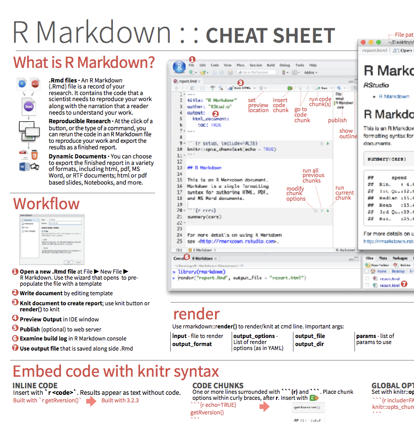
Markdown Quick Reference
Help -> Markdown Quick Reference
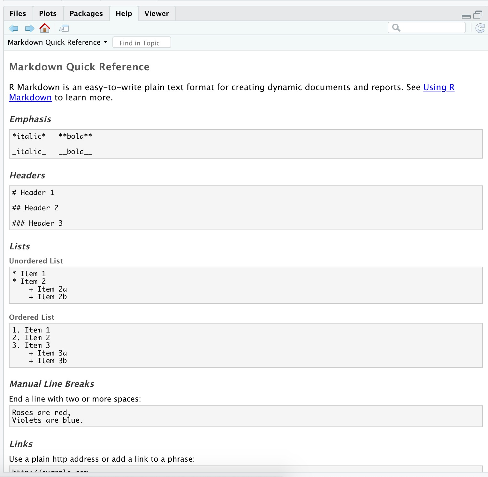
Projects in RStudio
Good to keep all the files associated with a particular project organized together – input data, R scripts, analytical results, figures.
RStudio has built-in support for this via its projects.
Projects provide an easy organization of your files and analyses.
R runs from a working directory, the location (folder) on your computer that R will use as a default when looking for data files, producing output, etc.
Project files (.Rproj)
When you open a project, RStudio sets the working directory to the folder in which the .Rproj file exists.
Using projects can be VERY helpful.
Lab exercise 1/4
(Instructions also in lab-exercise-01.pdf)
Start a new project. (call it biostats2 or something similar)
Open a new R markdown file. Save it. (name it lastname_lab1.Rmd or something similar)
At the top of the script, add comments with your name and lab 1.
Work in pairs or individually.
Submit your .Rmd file via myCourses before lab next week.
Write code that evaluates the following when run. \[7 + 5(4+3)\] \[e^{-5(0.2+0.15)}\] \[\frac{\sqrt{1+2(3+2)}}{\ln(3^2+2)}\]
Objects
Common types of objects
- Numbers
- Characters (i.e. text or strings)
- Tables
- Vectors and matrices
- Plots
- Statistical output
- Functions
Objects in R are global
Viewing objects: In RStudio see top-right Workspace tab
More generally:
ls() lists all objects in the workspace.
Use rm() to remove an object.
Data types (modes)
Describe how objects are stored in computer memory.
In R you do not need to specify the data type.
Common data types:
Numeric (integer, floating point numbers or doubles)
Logical (Boolean, true or false)
Characters (text or string data)
Types are not always obvious in R, but can be important to know.
Data types II
Vectors
> weights <- c(2.3,5.4,7.5,9)
> print(weights)
[1] 2.3 5.4 7.5 9.0
> years <- 2007:2016
> print(years)
[1] 2007 2008 2009 2010 2011 2012 2013 2014 2015 2016
> years <- seq(from=2000,to=2016,by=2)
> print(years)
[1] 2000 2002 2004 2006 2008 2010 2012 2014 2016
> x <- rep(3,times=10)
> print(x)
[1] 3 3 3 3 3 3 3 3 3 3
> rep(1:3,times=3)
[1] 1 2 3 1 2 3 1 2 3
> rep(1:3,length=10)
[1] 1 2 3 1 2 3 1 2 3 1More on Vectors
Vectors are ordered and can be referred to by element(s) using [ ]
Vector operations are element-wise
Lab exercise 2/4
(Instructions also in lab-exercise-01.pdf)
Create vectors using seq(), rep(), and mathematical operators. Only use c() when absolutely necessary.
hint Remember you can get help on a function by typing ?functionname
- Positive integers from 1 to 99
- Odd integers between 1 and 99
- The numbers 1,1,1, 2,2,2, 3,3,3
- The numbers -5,-4,-3,-5,-4,-3,-5,-4,-3
- The fractions 1, 1/2, 1/3, 1/4, …, 1/10
- The cubes 1, 8, 27, 64, 125, 216
Useful functions
> x <- c(5,3,2,6,3,9,1,18)
> length(x) # length of vector x
[1] 8
> sort(unique(x)) # sorted vector of unique values in x
[1] 1 2 3 5 6 9 18
> min(x) # minimum value in x
[1] 1
> max(x) # maximum value in x
[1] 18
> mean(x) # mean of x
[1] 5.875
> median(x) # median of x
[1] 4
> sd(x) # standard deviation of x
[1] 5.514591
> range(x) # range of values in x
[1] 1 18
> range(x)[2] # 2nd element of values returned by range()
[1] 18
> quantile(x) # optional argument 'probs' can be handy
0% 25% 50% 75% 100%
1.00 2.75 4.00 6.75 18.00 Boolean logic operators
| Operator | R Code |
|---|---|
| AND | & (&&) |
| OR | | (||) |
| NOT | ! |
| less than | < |
| greater than | > |
| less than or equal | <= |
| greater than or equal | >= |
| equals | == |
| NOT equal | != |
&& and || are used when asking IF statements.
These only use a single value, not a vector.
Boolean examples
Lab exercise 3/4
Complete the following using the vector y:
y <- c(3,2,15,-1,22,1,9,17,5)
- Display the first and last values.
- Find the last value for a vector of any length.
- Display the values that are greater than the mean of
y.
- Display the positions (indices) of the values greater than the mean.
- Are all the values positive?
- Are any of the values equal to the mean?
- Are any of the values equal to the median?
Other types of objects
matrices (more generally, arrays)
- multi-dimensional generalizations of vectors.
- are vectors that can be indexed by two or more indices.
factors
- compact ways to handle categorical data.
lists
- general form of vector, elements need not be the same type.
- elements often themselves vectors or lists.
- convenient way to return results of statistical computations.
dataframes
- matrix-like structures, columns can be of different types.
- often ‘data matrices’ with one row per observational unit but with (possibly) both numerical and categorical variables.
functions
- are themselves objects in R which can be stored in the project’s workspace.
- provide a simple and convenient way to extend R.
Dataframes
There are lots of data set examples in R.
e.g. record times for 35 Scottish hill races
Extracting information from data frames
Use the $ to extract vectors from a data frame
You can also specify the row index, column index, or both object[row,column]
> # extract all of column 2
> hills[,2] # also hills[,"climb"]
[1] 650 2500 900 800 3070 2866 7500 800 800 650 2100 2000 2200 500 1500
[16] 3000 2200 350 1000 600 300 1500 2200 900 600 2000 800 950 1750 500
[31] 4400 600 5200 850 5000
> # exclude column 1, but retain the other columns (1st 3 rows)
> hills[1:3,-1]
climb time
Greenmantle 650 16.083
Carnethy 2500 48.350
Craig Dunain 900 33.650
> # extract rows 4 and 7
> hills[c(4,7),]
dist climb time
Ben Rha 7.5 800 45.600
Bens of Jura 16.0 7500 204.617
> # extract the rows that are specified by the object x
> x <- c(4,7,nrow(hills))
> hills[x,]
dist climb time
Ben Rha 7.5 800 45.600
Bens of Jura 16.0 7500 204.617
Moffat Chase 20.0 5000 159.833Extracting information from data frames (2)
Data frames are commonly used in a structure called a ‘tibble’, from the tidyverse.
Extract variables using the select verb function in the dplyr package
> dplyr::select(hills,dist)
dist
Greenmantle 2.5
Carnethy 6.0
Craig Dunain 6.0
Ben Rha 7.5
Ben Lomond 8.0
Goatfell 8.0
Bens of Jura 16.0
Cairnpapple 6.0
Scolty 5.0
Traprain 6.0
Lairig Ghru 28.0
Dollar 5.0
Lomonds 9.5
Cairn Table 6.0
Eildon Two 4.5
Cairngorm 10.0
Seven Hills 14.0
Knock Hill 3.0
Black Hill 4.5
Creag Beag 5.5
Kildcon Hill 3.0
Meall Ant-Suidhe 3.5
Half Ben Nevis 6.0
Cow Hill 2.0
N Berwick Law 3.0
Creag Dubh 4.0
Burnswark 6.0
Largo Law 5.0
Criffel 6.5
Acmony 5.0
Ben Nevis 10.0
Knockfarrel 6.0
Two Breweries 18.0
Cockleroi 4.5
Moffat Chase 20.0Create a new variable of the race names
> hills_tbl <- mutate(hills_tbl,race=rownames(hills))
> hills_tbl <- dplyr::select(hills_tbl,race,everything())
> hills_tbl
# A tibble: 35 × 4
race dist climb time
<chr> <dbl> <int> <dbl>
1 Greenmantle 2.5 650 16.1
2 Carnethy 6 2500 48.4
3 Craig Dunain 6 900 33.6
4 Ben Rha 7.5 800 45.6
5 Ben Lomond 8 3070 62.3
6 Goatfell 8 2866 73.2
7 Bens of Jura 16 7500 205.
8 Cairnpapple 6 800 36.4
9 Scolty 5 800 29.8
10 Traprain 6 650 39.8
# ℹ 25 more rowsQuickly visualize the dataset
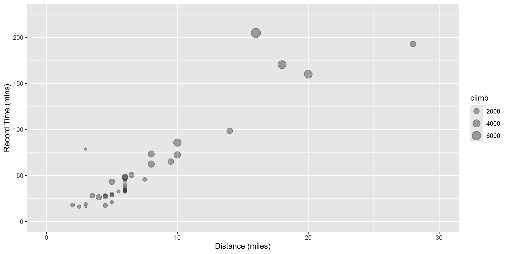
Extracting elements logically
> fish <- c("cod","haddock","dogfish","pollock")
> length <- c(34,23,75,18)
> age <- c(6,3,17,2)
> fish_data <- tibble(fish=fish,length=length,age=age)
> fish_data$age # a vector
[1] 6 3 17 2
> fish_data$age > 5 # a logical vector
[1] TRUE FALSE TRUE FALSE
> filter(fish_data, age>5) #avoids having to create a logical vector
# A tibble: 2 × 3
fish length age
<chr> <dbl> <dbl>
1 cod 34 6
2 dogfish 75 17
> # combining conditions
> filter(fish_data, age > 5, fish == "dogfish")
# A tibble: 1 × 3
fish length age
<chr> <dbl> <dbl>
1 dogfish 75 17
> filter(fish_data, length < 25 | length >= 50)
# A tibble: 3 × 3
fish length age
<chr> <dbl> <dbl>
1 haddock 23 3
2 dogfish 75 17
3 pollock 18 2Using the Pipe
Combine verb operations with the pipe operator (|>) e.g.
The pipe passes the result from one function call to the next.
Can be read as “and then”.
(also the older tidyverse pipe: %>% )
Summarizing Data
After selecting data we might like to perform analyses on it.
We can use group_by() to recognize structure in the data.
Then apply functions to variables using summarize()
Recall gapminder data, find the average life expectancy in 2007 for each continent
Tips and Tricks
Comments
Use comments within R code to document the purpose of your code. Anything on a line after a # is ignored by R. RStudio uses a different color to help readability.
SAVE your scripts(!), not workspaces. Use meaningful variable names. Adopt a coding style and use consistently.
(e.g. https://google.github.io/styleguide/Rguide.xml)
The str() function can be incredibly helpful when querying objects.
Make use of help() documentation.
There are almost always multiple ways of getting the same result.
We’ll mostly use low level functions to help you understand how R works.
Some advanced functions are cleaner and do things more quickly.
Lab exercise 4/4 (data frames using hills)
- Display the first 5 rows of the
hillsdataframe.
- Find the fastest time.
- Display the hill races (and distance, climbs, and times) with the 3 fastest times.
- Extract and display the record time for Cairngorm.
- Find how many hill races have a climb greater than the mean.
- Display the names of the hill races that have a climb greater than the mean.
- Display the names and times of the races that are at least 10 miles long and have a climb greater than 4000 feet.
- Find the standard deviation of the record times for all races except for the highest climb, the Bens of Jura.
- Display the range (minimum and maximum) of the average speed for the races.
- Find the race that had the fastest average speed.
- BONUS Find the mean of the record times for races whose names start with letters A through K.
Next time…
1/22: Introduction to R and R Studio, working with data
1/29: Visualizing data
2/05: Probability, linear modeling
2/12: Data wrangling, model summaries
2/19: Simulation, Resampling
2/26: Iteration
3/05: Creating functions, debugging
3/19: Flex: automated reporting & Quarto
4/02: working with Spatial data